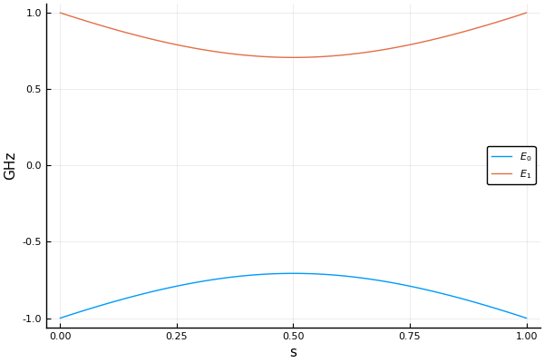

Hamiltonians
An AbstractHamiltonian type defines a time-dependent matrix and provide the interface to the low-level solvers. OpenQuantumTools offers three ways to construct a Hamiltonian object. Before introducing them, we clarify how HOQST handles units in this case.
Units
From the Schrodinger equation
\[ i\hbar \lvert \Phi \rangle = H \lvert \Phi \rangle \ ,\]
it follows that the Hamiltonian can be normalized as $H / \hbar$. If we set $h=1$, then what appears on the RHS of the Schrodinger equation is $2\pi H$ where $H$ has frequency units. In OpenQuantumTools, we set this to the natural units of superconducting qubits – GHz. Internally, OpenQuantumTools always works with the convention of $h=1$.
Construction
Affine operator
For fs = [f1,f2,...,fn] and Ms = [M1,M2,...,Mn] where each of the fis and Mis are Function(or callable object) and Matrix, the following constructor
function TypeHamiltonian(fs,Ms)builds a time-dependent Hamiltonian $H = f_1(t)M_1 + f_2(t)M_2 + … + f_n(t)M_n$. The Type should be changed to a specific descriptor of the Hamiltonian. For example, a Hamiltonian consisting of dense matrices can be constructed with DenseHamiltonian:
julia> H = DenseHamiltonian([(s)->1-s, (s)->s], [σx, σz])The above code line creates a standard single-qubit annealing Hamiltonian of the form $H(s)=(1-s)σ_x+sσ_z$, whose default unit is GHz ($h=1$). Internally, OpenQuantumTools stores the value of $H/\hbar$. So any object created with the default unit will be scaled by $2π$. Users can set the unit to $ħ=1$ by
julia> H_ħ = DenseHamiltonian([(s)->1-s, (s)->s], [σx, σz]; unit=:ħ)which means that the input of the constructor is already $H/\hbar$.
To obtain the value of Hamiltonian at a given dimensionless time s in a consistent manner, we recommend using the function evaluate:
julia> evaluate(H, 0.5)
2×2 Array{Complex{Float64},2}:
0.5+0.0im -0.5+0.0im
-0.5+0.0im -0.5+0.0imIt always returns energy in GHz units. On the other hand, calling H directly like a Function will return a numerical value of $H/\hbar$:
julia> H(0.5) == 2π*(σx + σz)/2
trueThere are two additional constructors: SparseHamiltonian and AdiabaticFrameHamiltonian, which construct the sparse and adiabatic-frame Hamiltonian, respectively.
Interpolation
The second method to construct a Hamiltonian is to interpolate a list of precomputed values:
\[ [H(s_1), H(s_2), \ldots]\]
The syntax is
H_interp = InterpDenseHamiltonian(s_axis, H_list)
H_interp = InterpSparseHamiltonian(s_axis, H_list)where s_axis and H_list are the grid points and corresponding Hamiltonian values. The constructors also take the keyword arguments method, order and unit. method and order specify the internal interpolation method and its corresponding order. For dense Hamiltonians, both BSpline of order 0-3 and Gridded of order 0-1 are supported. For sparse Hamiltonians, only Gridded of order 0-1 is supported. Internally, OpenQuantumTools relies on Interpolations.jl for interpolation.
Functions
The third way to build a Hamiltonian is to use a function directly. A custom Hamiltonian can be obtained by using hamiltonian_from_function:
julia> hamiltonian_from_function((s)->σz)
CustomDenseHamiltonian with Complex{Float64}
with size: (2, 2)However, this part is still under construction, so should only used by advanced users at this time.
Eigendecomposition
eigen_decomp can be used to perform an eigendecomposition of the AbstractHamiltonian at a particular time. For example
w, v = eigen_decomp(H, 0.5, lvl=2)calculates the lowest two energy eigenvalues and eigenvectors of H at $s=0.5$. w is returned in the unit of GHz, and each column in v corresponds to one eigenvector.
In addition, a user-defined eigendecomposition function can be attached to the AbstractHamiltonian object if there is a better eigendecomposition algorithm than the default LAPACK routine. The following code
function build_user_eigen(u_cache)
EIGS = function(H, t, lvl)
println("I am the user defined eigendecomposition routine.")
w, v = eigen(Hermitian(H(t)))
w[1:lvl], v[:, 1:lvl]
end
end
H = DenseHamiltonian([(s)->1-s, (s)->s], [σx, σz], EIGS=build_user_eigen)
eigen_decomp(H, 0.5, lvl=2)is a trivial example of replacing the default eigendecomposition routine with a user-defined one. More details can be found in the tutorial.
Plotting
OpenQuantumTools also interacts with Plots.jl and provides convenient ways to visualize the spectrum of any given Hamiltonian. For example
using Plots
plot(H, 0:0.01:1, 2)will produce the following figure. The second argument 0:0.01:1 is the x_axis values, and the third argument 2 is the number of levels to plot. The third argument can also be a list of levels to plot.
